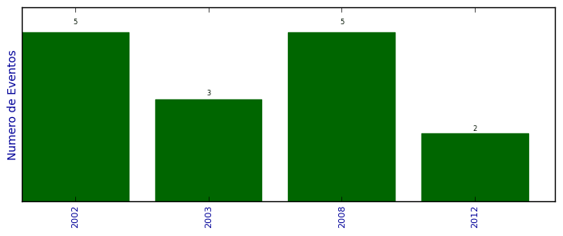

Total de participação em eventos

Número total de itens: 15
2012
| 1. | Escola Regional de Alto Desempenho (ERAD) 2012. 2012. (Encontro). |
| 2. | XIII Simpósio em Sistemas Computacionais (WSCAD-SSC) 2012. 2012. (Simpósio). |
2008
| 1. | 6a. Escola Regional de Redes de Computadores (ERRC 2008).Membro do Comitê de Programa. 2008. (Encontro). |
| 2. | IEEE 11th International Conference on Computational Science and Engineering (CSE 2008). Membro do Comitê de Programa. 2008. (Congresso). |
| 3. | IX Simpósio em Sistemas Computacionais (WSCAD-SSC 2008).Membro do Comitê de Programa. 2008. (Simpósio). |
| 4. | IX Workshop de Software Livre (WSL 2008).Membro do Comitê de Programa. 2008. (Simpósio). |
| 5. | VIII Escola Regional de Alto Desempenho (ERAD 2008).Membro do Comitê de Programa. Coordenadora do Fórum de Pós-Graduação. 2008. (Encontro). |
2003
| 1. | Encontro Nacional de Ciência da Informação.IV Encontro Nacional de Ciência da Informação. 2003. (Encontro). |
| 2. | IV Fórum Internacional de Software Livre. 2003. (Outra). |
| 3. | XXIII Congresso da Sociedade Brasilera de Computação. 2003. (Congresso). |
2002
| 1. | II Seminário Internacional de Arquivos de Tradição Ibérica. 2002. (Seminário). |
| 2. | II Seminário Regional de Arquivos - Tecnologias da Informação na Arquivologia.Sistemas de Informação em Arquivologia. 2002. (Seminário). |
| 3. | III Forum Internacional Software Livre. 2002. (Outra). |
| 4. | IV Semana do Arquivista. 2002. (Outra). |
| 5. | XXII Congresso da Sociedade Brasileira de Computação. 2002. (Congresso). |
(*) Relatório criado com produções desde 1999 até HOJE
Data de processamento: 02/04/2014 18:15:43